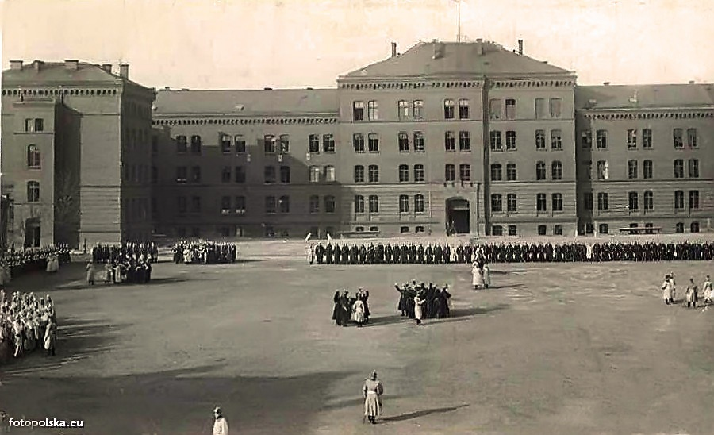

Sądy Okręgowe są jednym z najważniejszych elementów polskiego systemu sądownictwa. Są to instytucje, które pełnią kluczową rolę w rozstrzyganiu spraw karnych, cywilnych oraz administracyjnych na poziomie okręgu sądowego. Każdy Sąd Okręgowy obejmuje swoim zasięgiem konkretne terytorium, na którym jest odpowiedzialny za prowadzenie postępowań sądowych.
Sprawy Karno-Sądowe: Sądy Okręgowe rozpatrują sprawy związane z przestępstwami i wykroczeniami popełnionymi na terenie danego okręgu sądowego. W ramach tych spraw podejmują decyzje dotyczące winy oskarżonych oraz wymierzają kary.
Sprawy Cywilne: Są to sprawy dotyczące m.in. rozwodów, podziału majątku, odszkodowań czy zobowiązań pieniężnych. Sądy Okręgowe rozstrzygają spory pomiędzy stronami, starając się osiągnąć sprawiedliwy i zgodny z prawem wynik.
Sprawy Administracyjne: Sądy Okręgowe zajmują się również sprawami administracyjnymi, np. w zakresie kontroli decyzji organów administracji publicznej. W przypadku konfliktu między obywatelem a organem administracyjnym, Sąd Okręgowy może być ostateczną instancją rozstrzygającą.
Prezes Sądu Okręgowego: Na czele każdego Sądu Okręgowego stoi Prezes, który kieruje pracami sądu i odpowiada za jego sprawne funkcjonowanie.
Sędziowie: Są to osoby mające wykształcenie prawnicze oraz doświadczenie zawodowe, które zajmują się rozpoznawaniem spraw i wydawaniem wyroków.
Aparat Administracyjny: Oprócz sędziów, w Sądzie Okręgowym pracuje także personel administracyjny, który wspomaga funkcjonowanie sądu.
Budynek przy ulicy Kościuszki 15, w którym obecnie mieści się siedziba Sądu Okręgowego w Gliwicach, został wybudowany pod koniec lat 80, XIX wieku. Formie architektonicznej budynku nadano pałacowo-militarny charakter w stylu neorenesansowym. Jest to duży, murowany gmach z cegły, częściowo otynkowany, obejmujący cztery kondygnacje użytkowe oraz piwnice, a w części centralnej nieużytkowe poddasze. Surową monumentalną bryłę oparto na rzucie litery U, z krótszymi skrzydłami bocznymi.
Budynek pierwotnie przeznaczony był na koszary stacjonujących w Gliwicach wojsk niemieckich. Po wojnie w budynku tym mieściła się szkoła górnicza, a od lat 80, XX wieku stał się własnością Wojska Polskiego.
W ramach rozpoczÄ™tego wówczas remontu i rozbudowy budynku wzniesiono w elewacji północno-zachodniej dwie nowe klatki schodowe z szybami windowymi oraz powiÄ™kszono poddasze o nadbudowy w bocznych częściach budynku głównego i w bocznych skrzydÅ‚ach. Rezygnacja z przeznaczenia gmachu na potrzeby szpitala wojskowego spowodowaÅ‚a zaniechanie prac remontowych. Po podjÄ™ciu w 1999 roku decyzji o utworzeniu w Gliwicach Sądu OkrÄ™gowego, budynek w 2000 roku zostaÅ‚ zmodernizowany i przystosowany do funkcji sądowych. 4 stycznia 2001 roku uroczyście oddano do użytkowania nową siedzibÄ™ Sądu OkrÄ™gowego w Gliwicach.
📍Tadeusza Kościuszki 15, 44-100 Gliwice
Godziny otwarcia:
poniedziałek 7:30–18:00
wtorek 07:30–15:30
środa 07:30–15:30
czwartek 07:30–15:30
piątek 07:30–15:30